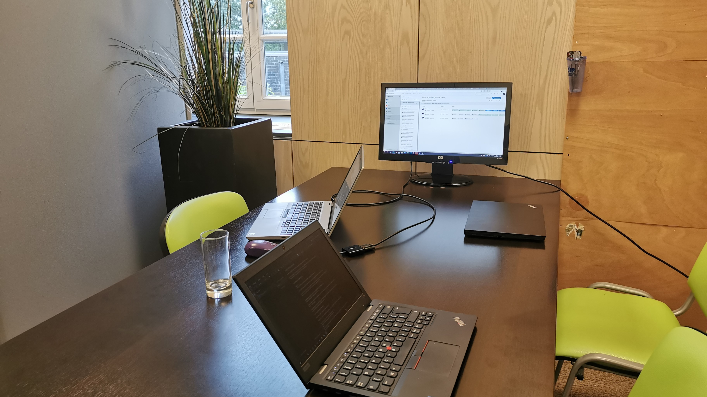
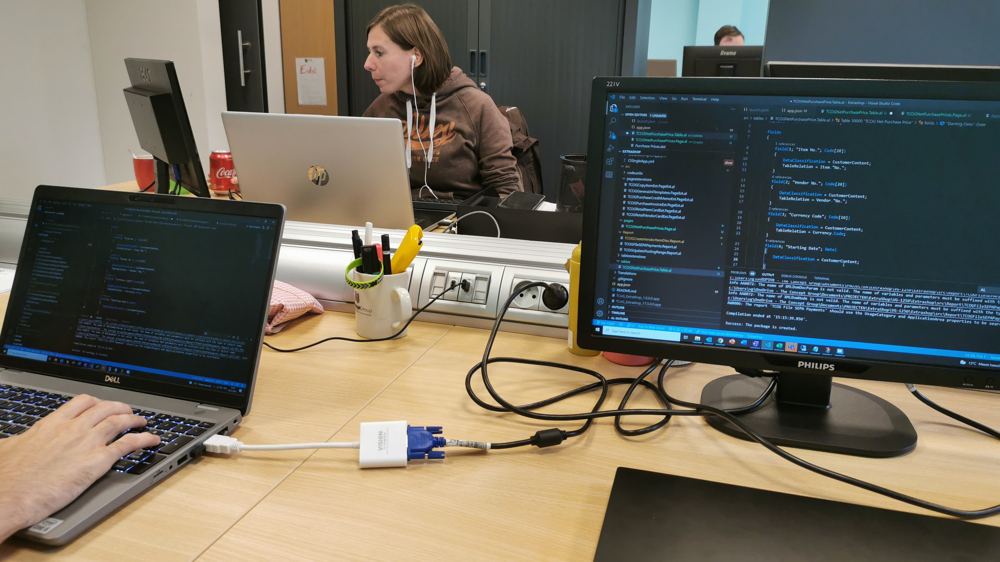
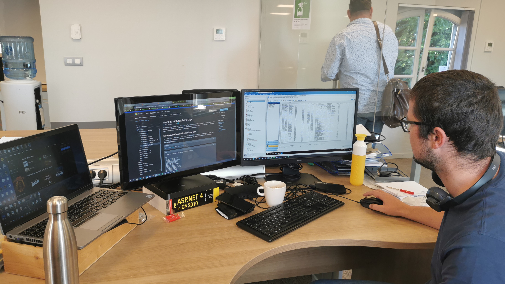

GIP
Website

.Dagverslag 1
2021-10-04
2021-10-04

STAGE TCOG
Mijn Eerste Dag
Vandaag was de eerste dag dat ik naar het TCOG in Turnhout ging voor de observatie-stage.
Ik werd vriendelijk ontvangen en kreeg direct uitleg over het bedrijf. Toen ik uitleg kreeg over wat het bedrijf deed, sinds ik nog niet echt exact wist wat ERD was, ben ik meteen geïnteresseerd geraakt, omdat het bijna helemaal software gericht was.
Ik kreeg een rondleiding en vond hun manier van werken slim bedacht, de programmeurs zaten samen in de boven verdieping om snel met elkaar te kunnen communiceren en de helpdesk zat beneden waar ze met elkaar snel kunnen overleggen voor hun client en met hun client.
Het was een rustige dag, maar voor de programmeurs was het deze morgent wel druk. Het bedrijf Acco had een datacommunicatieprobleem waardoor de bestellingen van studenten niet door naar de volgende fase geraakte, gelukkig begon het in de middag vlotter te gaan, maar het is nog altijd niet opgelost.
.Dagverslag 1
2021-10-04
2021-10-04
STAGE TCOG
Mijn Eerste Dag
Bekijk Dagverslag

.Dagverslag 2
2021-10-05
2021-10-05

STAGE TCOG
Autorit & Gesprek
Bekijk Dagverslag
.Dagverslag 3
2021-10-06
2021-10-06

STAGE TCOG
Programmeren in AL
Bekijk Dagverslag
.Dagverslag 4
2021-10-07
2021-10-07
STAGE TCOG
App Development
Bekijk Dagverslag
.Dagverslag 5
2021-10-08
2021-10-08

STAGE TCOG
Laatste Dag
Bekijk Dagverslag